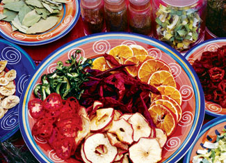
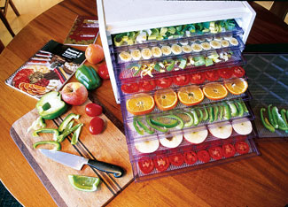
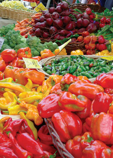
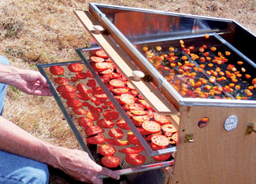
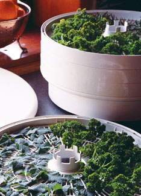
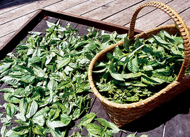
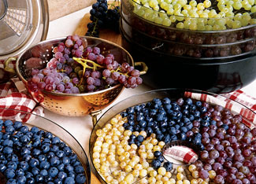

Reap The Garden & Market Bounty: How To Dry Food
Dry the harvest to stock up on homegrown snacks and convenience foods for year-round eating.
By Barbara Pleasant
August/September 2008
Many gardeners freeze, can or give away surplus zucchini and tomatoes, but what about drying them? Not only is drying a delicious way to preserve and concentrate the flavors of your fruits, veggies and herbs, but when dried, produce requires little space - and no electricity - to store, so you can enjoy it throughout fall and winter.
Last year I dried peppers, squash, garlic and quite a few cherry tomatoes, which brought much comfort when a power outage pushed my frozen treasures to the brink of thaw. The biggest revelation came in early spring, when I began using dried foods as other stockpiled veggies ran low. I discovered that cooking with delicious home-dried foods is as easy as cooking with packaged convenience foods, at a fraction of the cost. Sweet dried fruits and crunchy veggies are great in meals, but they’re good enough to enjoy as snacks, too.
What can you dry? From tomatoes and beets to sweet corn and green beans, almost any vegetable that can be blanched and frozen is a likely candidate for drying, along with apples, strawberries, peaches and most other fruits. In times past, people waited for a spell of dry, breezy weather to dry bunches of herbs or peppers threaded on a piece of string. And the first dehydrator I ever used was a parked car (just lay the goods on the dash or under the rear window). You will need only a warm oven to dry a basket of shiitake mushrooms, but unless you live in an arid climate where sun-drying is practical, eventually you’ll want a dehydrator. To compare plug-in options, read David Cavagnaro's Choosing a Food Dehydrator. Or read as Eben Fodor shares his expertise on building simple, nonelectric food dryers in Build a Solar Food Dehydrator. (For an inexpensive DIY solar dehydrator, see Super-easy, Low-cost Solar Dehydrator. And for lots more on solar options, see the Solar Food Dehydrators landing page. - Mother)
But back to the food. Do you want the simplicity of scalloped potatoes from a box - but homegrown? Or how about the makings for dozens of pasta salads in which everything but the noodles came from your garden or a local farm? With a stash of dried foods, you really can drag through the door after work, set some dried veggies to soak, and then flop down for a few minutes, talk to the kids or change your clothes. By the time you’re back in the kitchen, you’ll be greeted by plump, pre-cut, organically grown veggies ready to be stir-fried, sautéed, simmered or tossed with dressing for a fast salad. Plus, drying foods to stockpile is one of the easiest ways to achieve a more local diet.
Back to the money. Organic convenience foods have their place in busy lives, but you pay for the time and energy involved in their creation. You subsidize the growing, drying, packaging, shipping and marketing, and it all adds up to some hefty retail prices. A dried organic vegetable soup kit costs $2 to $3, and a frozen entrée can push $5. The organic “skillet dinner” category runs somewhere in between, and it’s a great example of a situation where you could make your own for 50 cents using dried foods.
Drying peppers and herbs can save you big bucks at the spice rack, too. When you make your own smoky sweet paprika or hot pepper blend, your cooking improves as you discover new ways to use your blends to punch up your favorite dishes.
Drying with Attitude
In Lanesboro, Minn., organic gardener and food drying expert Mary Bell thinks people should look at food drying with a creative eye. Bell has invented what can only be called new foods, like succulent “half-dried tomatoes” seasoned with basil and thyme or “Can’t A Loupe Candy” - chunks of cantaloupe seasoned with ginger and powdered sugar before being dried. To deal with bountiful crops of hard-to-preserve eggplant, she figured out how to cut eggplant into strips, soak them in a salt/lemon juice solution and dry them into pastalike strands. For overripe zucchini, she marinates thin slices before drying them into chips.
According to Bell, the attitude behind her newest book, Food Drying with An Attitude, is sustainability. “I want everybody to have food they can supply for themselves year round,” Bell says. “Drying can provide a way to use things you already have instead of buying from some other place.” Bell removes ribs from big kale leaves, dries them raw, and crushes them into a jar to use as all-purpose potherbs, and to sell at her farmers market booth alongside her locally famous fruit leathers and dried tomatoes - a springtime treat that satisfies customers’ appetites for fresh flavors.
“If people are given permission to try new things, they are often surprised at what they can dry - like marked-down bananas at the store,” Bell says, adding that drying food is a simple skill to master.
Food Drying is 1-2-3 Easy
- Slice or dice food into small, uniform pieces.
- Dip the pieces in an acidic solution or blanch them to enhance the quality of the final product.
- Place the pieces in single layers to dry, and turn as needed to help them dry more quickly.
Most vegetables are dried to a crisp, but fruits are done when they become leathery. Bell points out, however, that there is plenty of room in between, for example, savory chunks of half-dried tomatoes. If you want to try drying using only a sunny windowsill during the day and a warm (from the pilot light) oven at night, start with veggies that can be dried raw - garlic, mushrooms, cherry tomatoes and peppers - and fresh greens such as kale or chard. First wash greens in cool water, then pat dry between towels.
Onions, okra, horseradish and many herbs are dried raw, too, but don’t wait until your onions get soft. Instead, select onions for drying that may not store well.
As I harvest garlic, I set aside the best bulbs for replanting, and then dry some of the rest. When the fresh garlic runs out (usually in February), the dried garlic fills in until the new crop is ready.
The high sugar and acid content of apples, pears and peaches make them great candidates for dip-and-dry treatments, in which cut pieces are dipped in an acidic solution to stop the oxidation process that darkens them. Orange, pineapple or cranberry juice work well, and you can drink the leftover juice when you’re finished. You may like the flavor enhancement from using pineapple juice, or the colors you get from letting apple slices soak in cranberry juice for an hour before drying. Some vegetables also darken when dried, but that’s easy to prevent by soaking the pieces in a mixture of one part lemon juice to four parts water.
Check Your Berries
If you want to replace the organic trail mixes you’ve been buying with a homemade version, go for it! Blueberries, cherries, cranberries, seedless grapes and figs do require extra steps to get great results, but if you can boil water, you can dry them.
After they’ve been washed, drained (and pitted if necessary) “check” the fruits by dipping them in rapidly boiling water for two seconds, or pour boiling water over them for a count of four. After the water drains away, spread the fruits on cookie sheets, pat dry, and pop them in the freezer for one to two hours. Then take them out and dry them right away. The boiling water cracks the skins and the brief freezing breaks down cell walls, transforming the fruits into incredibly tasty nuggets for snacks, cereals or baking. Try drying them halfway, to the chewiness of raisins, which will require refrigerated storage because of their high moisture content. Fruit dried until near-crisp can be stored in any cool, dark place. To rehydrate, just soak them in water for an hour before eating.
Steam & Blanch Basics
When preparing veggies for drying, blanch them in boiling water, or better yet, use a steamer to limit their uptake of water and fix enzymes. Broccoli florets and carrot slices that are steam-blanched and dried transform into soup in minutes (just add stock), and rehydrated steam-blanched green beans almost pass for the freshly picked version.
Sweet corn dries beautifully, too, and it’s easiest to handle if you blanch the whole ears before cutting off the kernels. Instead of blanching beets, winter squash and pumpkins, roast them until almost done before peeling, cutting into slices or chunks, and drying them.
Simple, Safe Storage
Many foods that seem to be dried to perfection when you stash them in airtight containers may surprise you by going soft again as moisture levels equalize inside the container. Putting the pieces back into the dehydrator for an hour or two will fix the problem, making it possible to store the food at cool temperatures for up to a year. Keep chewy cherries, half-dried herbed tomatoes and other dried foods that are still slightly moist in your refrigerator or freezer to prevent mold. Freezer storage also is a good idea for foods dried outdoors because it will kill any insects hiding in crevices.
Prepare to be amazed at how little storage space your dried foods require. I can fit five big zucchinis, three butternut squashes, 12 fat garlic bulbs and 20 pounds each of tomatoes and peppers on one basement shelf once they’re dried. I never have to worry when the power stays off for days, but best of all, I always have something fast and easy to cook that came from my own organic garden. Of course, nongardening cooks can also stock up at the farmers market when harvest is high and you’re likely to find the best deals. It’s a great way to support local farmers now, and keep eating delicious local foods all winter long.
Contributing editor Barbara Pleasant grows a serious food garden near Floyd, Va. Visit her Web site to find out more.
Drying Tips
Make creative cuts. Try using an egg cutter or other unusual blades to slice mushrooms or carrots into attractive serrated slices or matchsticks before drying them. If you do a lot of drying (or pickling), a manual mandoline slicer can be a huge timesaver.
Do it outside. When using an electric dehydrator, run it outdoors - in a place protected from rain - to avoid heating up your kitchen. Or run it at night.
Dry on a shrub. If you suddenly need lots of space to dry a tree’s worth of apples or pears, spread an old sheet over a dense bush (like a boxwood), spread out the fruit, and cover it with cheesecloth to keep out insects. With good weather, the fruits will dry in two days. At night when it’s damp, bring the fruit indoors and spread it on an unused bed or table.
Make fruit leathers to cut into kid-pleasing roll-ups by combining equal parts of any fruit purée with thick applesauce before drying on lightly oiled sheets. A small amount of gelatin mixed into the fruit mixture helps leathers set up and dry more rapidly.
Powder your culls. Dry onions, garlic, asparagus, snap beans and other vegetables. Then grind them into a vegetable powder. Mixed with a little water or oil, vegetable powders work like vegetable bouillon. Use a small coffee mill to chop dried vegetables and herbs into coarse pieces or fine powders.
Pick up your scissors. Before rehydrating dried tomato or zucchini slices, cut them into smaller pieces with kitchen shears to help them plump up faster.
Get wet. When cooking, add dried vegetables to the moistest part of the dish. For example, sprinkle dried tomatoes and peppers over the sauce layer of a pizza rather than on the top.
|
 DAVID CAVAGNARO Drying food is easy and inexpensive, and is one of the best ways to enjoy local foods all year. |
 DAVID CAVAGNARO You can dry almost any fruit or veggie you like to eat. |
 EBEN FODOR If you don’t have a garden, stock up on in-season produce from a farmers market to dry at home. |
|
 EBEN FODOR Tap free solar energy to create amazing sun-dried tomatoes. |
 RICK WETHERBEE Here, fresh parsley is dried in an electric food dehydrator. |
 DAVID CAVAGNARO Dried basil |
 WALTER CHANDOHA Many herbs can be dried simply by hanging them upside down. |
EBEN FODOR Most fruits can be dried, and these sweet plums are going to be delicious! |
 RICK WETHERBEE I heard it through the grapevine: You don’t have to have California sunshine to make great raisins! Here, grapes are being prepped for the electric food dehydrator. |